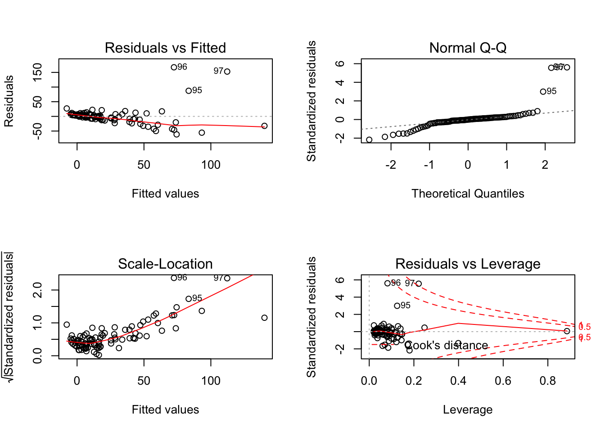
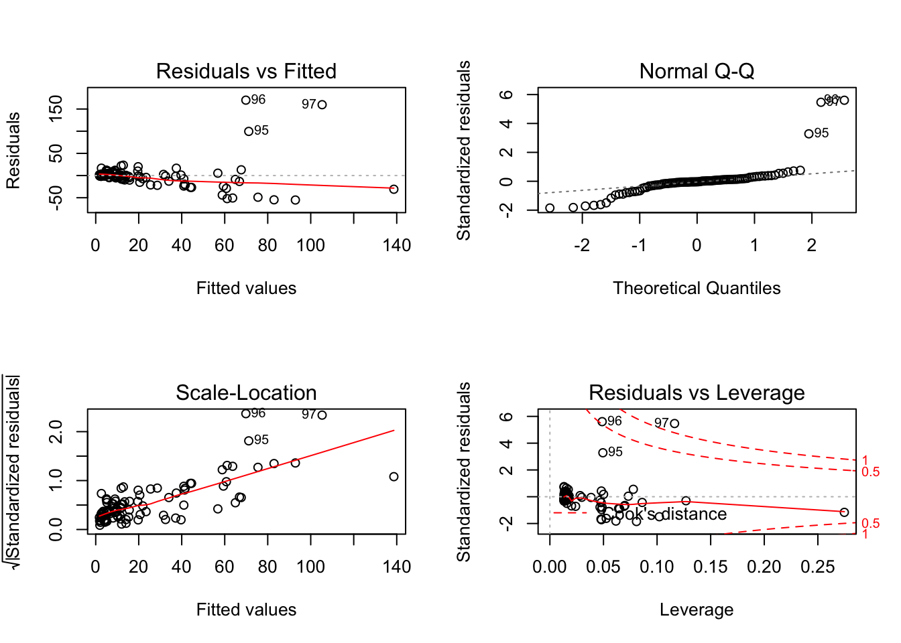

Project #1
Ming Chen & Wenqiang Feng
2/2/2017
library(ggplot2)
library(plyr)
library(gplots)
library(asbio)
library(corrplot)
library(car)Load data
C5 <- read.table("./data/APPENC05.txt")
data = C5[,2:9]
y=C5[,2]
X=C5[,3:9]
#colnames(data1612) = c("time_lapse", "agent")Stem-and-Leaf Plot
stem(X$V3)##
## The decimal point is 1 digit(s) to the right of the |
##
## 0 | 00000111111111111111222222222222333333333334444444444
## 0 | 555555666666778888889
## 1 | 01233444
## 1 | 55667788
## 2 | 033
## 2 | 67
## 3 | 2
## 3 |
## 4 |
## 4 | 6stem(X$V4)##
## The decimal point is 2 digit(s) to the right of the |
##
## 0 | 11222222222223333333333333333333333333333334444444444444444444
## 0 | 55555555555555555566666667778889
## 1 | 12
## 1 |
## 2 |
## 2 |
## 3 |
## 3 |
## 4 |
## 4 | 5stem(X$V5)##
## The decimal point is 1 digit(s) to the right of the |
##
## 4 | 134
## 4 | 779
## 5 | 0024
## 5 | 6778888999
## 6 | 000001111122233333334444444
## 6 | 555555566666677788888888888899999
## 7 | 000012222334
## 7 | 67789stem(X$V6)##
## The decimal point is at the |
##
## 0 | 000000000000000000000000000000000000000000046602366666899
## 2 | 66156667999
## 4 | 13478012355558899
## 6 | 26159
## 8 | 338
## 10 | 1333stem(X$V7)##
## The decimal point is 1 digit(s) to the left of the |
##
## 0 | 00000000000000000000000000000000000000000000000000000000000000000000
## 2 |
## 4 |
## 6 |
## 8 |
## 10 | 000000000000000000000stem(X$V8)##
## The decimal point is at the |
##
## 0 | 00000000000000000000000000000000000000000000044444557777779112234466
## 2 | 222337779
## 4 | 388138
## 6 | 288
## 8 | 28
## 10 | 33277
## 12 | 2
## 14 | 3
## 16 |
## 18 | 2stem(X$V9)##
## The decimal point is 1 digit(s) to the left of the |
##
## 60 | 000000000000000000000000000000000
## 62 |
## 64 |
## 66 |
## 68 |
## 70 | 0000000000000000000000000000000000000000000
## 72 |
## 74 |
## 76 |
## 78 |
## 80 | 000000000000000000000Correlation matrix
M = cor(X)
M## V3 V4 V5 V6 V7
## V3 1.000000000 0.005107148 0.03909442 -0.13320943 0.581741687
## V4 0.005107148 1.000000000 0.16432371 0.32184875 -0.002410475
## V5 0.039094423 0.164323714 1.00000000 0.36634121 0.117658038
## V6 -0.133209431 0.321848748 0.36634121 1.00000000 -0.119553192
## V7 0.581741687 -0.002410475 0.11765804 -0.11955319 1.000000000
## V8 0.692896688 0.001578905 0.09955535 -0.08300865 0.680284092
## V9 0.481438397 -0.024206925 0.22585181 0.02682555 0.428573479
## V8 V9
## V3 0.692896688 0.48143840
## V4 0.001578905 -0.02420693
## V5 0.099555351 0.22585181
## V6 -0.083008649 0.02682555
## V7 0.680284092 0.42857348
## V8 1.000000000 0.46156590
## V9 0.461565896 1.00000000corrplot(M, type="upper")
fit <- lm(V2~., data=data)summary(fit)##
## Call:
## lm(formula = V2 ~ ., data = data)
##
## Residuals:
## Min 1Q Median 3Q Max
## -61.330 -8.130 -0.014 6.324 167.436
##
## Coefficients:
## Estimate Std. Error t value Pr(>|t|)
## (Intercept) -15.24264 40.53932 -0.376 0.707814
## V3 2.03225 0.59359 3.424 0.000936 ***
## V4 0.01132 0.07395 0.153 0.878708
## V5 -0.53721 0.47588 -1.129 0.261977
## V6 1.29831 1.20168 1.080 0.282878
## V7 19.60957 10.89184 1.800 0.075187 .
## V8 1.09877 1.33377 0.824 0.412253
## V9 7.05922 5.19452 1.359 0.177589
## ---
## Signif. codes: 0 '***' 0.001 '**' 0.01 '*' 0.05 '.' 0.1 ' ' 1
##
## Residual standard error: 31.17 on 89 degrees of freedom
## Multiple R-squared: 0.4585, Adjusted R-squared: 0.4159
## F-statistic: 10.77 on 7 and 89 DF, p-value: 9.266e-10par(mfrow=c(2,2)) # init 4 charts in 1 panel
plot(fit)
cd<-which(cooks.distance(fit)>3.0)
covr<-which(covratio(fit)>2.0)
rst<-which(abs(rstudent(fit))>4)
index<-sort(unique(c(cd,covr,rst)))
index## [1] 32 96 97NewData = data[-c(index),]plot(fit, which=4)
abline(h=3.0, col="blue", lty=3)
lmtest::bptest(fit)##
## studentized Breusch-Pagan test
##
## data: fit
## BP = 25.085, df = 7, p-value = 0.000733# Evaluate Collinearity
vif(fit) # variance inflation factors ## V3 V4 V5 V6 V7 V8 V9
## 2.162606 1.128941 1.240489 1.311178 2.009331 2.516346 1.458701vif(fit) > 2 # problem?## V3 V4 V5 V6 V7 V8 V9
## TRUE FALSE FALSE FALSE TRUE TRUE FALSE# Choose a VIF cutoff under which a variable is retained (Zuur et al. 2010
# MEE recommends 2)
cutoff=2
# Create function to sequentially drop the variable with the largest VIF until
# all variables have VIF > cutoff
flag=TRUE
viftable=data.frame()
while(flag==TRUE) {
vfit=vif(fit)
viftable=rbind.fill(viftable,as.data.frame(t(vfit)))
if(max(vfit)>cutoff) { fit=
update(fit,as.formula(paste(".","~",".","-",names(which.max(vfit))))) }
else { flag=FALSE } }summary(fit)##
## Call:
## lm(formula = V2 ~ V3 + V4 + V5 + V6 + V7 + V9, data = data)
##
## Residuals:
## Min 1Q Median 3Q Max
## -54.794 -8.778 0.223 5.391 164.042
##
## Coefficients:
## Estimate Std. Error t value Pr(>|t|)
## (Intercept) -18.91802 40.22107 -0.470 0.6392
## V3 2.25470 0.52767 4.273 4.78e-05 ***
## V4 0.01090 0.07382 0.148 0.8830
## V5 -0.53047 0.47496 -1.117 0.2670
## V6 1.31986 1.19925 1.101 0.2740
## V7 23.61941 9.72629 2.428 0.0172 *
## V9 7.53201 5.15350 1.462 0.1474
## ---
## Signif. codes: 0 '***' 0.001 '**' 0.01 '*' 0.05 '.' 0.1 ' ' 1
##
## Residual standard error: 31.11 on 90 degrees of freedom
## Multiple R-squared: 0.4544, Adjusted R-squared: 0.418
## F-statistic: 12.49 on 6 and 90 DF, p-value: 3.393e-10SWfit = stepAIC(fit, direction="both")## Start: AIC=673.63
## V2 ~ V3 + V4 + V5 + V6 + V7 + V9
##
## Df Sum of Sq RSS AIC
## - V4 1 21.1 87138 671.65
## - V6 1 1172.5 88289 672.93
## - V5 1 1207.4 88324 672.96
## <none> 87117 673.63
## - V9 1 2067.6 89184 673.90
## - V7 1 5708.2 92825 677.78
## - V3 1 17673.4 104790 689.55
##
## Step: AIC=671.65
## V2 ~ V3 + V5 + V6 + V7 + V9
##
## Df Sum of Sq RSS AIC
## - V5 1 1192.3 88330 670.97
## - V6 1 1382.8 88521 671.18
## <none> 87138 671.65
## - V9 1 2047.2 89185 671.90
## + V4 1 21.1 87117 673.63
## - V7 1 5724.2 92862 675.82
## - V3 1 17816.0 104954 687.70
##
## Step: AIC=670.97
## V2 ~ V3 + V6 + V7 + V9
##
## Df Sum of Sq RSS AIC
## - V6 1 690.3 89020 669.73
## - V9 1 1555.8 89886 670.66
## <none> 88330 670.97
## + V5 1 1192.3 87138 671.65
## + V4 1 6.0 88324 672.96
## - V7 1 5242.0 93572 674.56
## - V3 1 18539.1 106869 687.45
##
## Step: AIC=669.73
## V2 ~ V3 + V7 + V9
##
## Df Sum of Sq RSS AIC
## - V9 1 1836.4 90857 669.71
## <none> 89020 669.73
## + V6 1 690.3 88330 670.97
## + V5 1 499.8 88521 671.18
## + V4 1 121.4 88899 671.59
## - V7 1 4985.4 94006 673.01
## - V3 1 17970.4 106991 685.56
##
## Step: AIC=669.71
## V2 ~ V3 + V7
##
## Df Sum of Sq RSS AIC
## <none> 90857 669.71
## + V9 1 1836.4 89020 669.73
## + V6 1 970.9 89886 670.66
## + V5 1 155.3 90701 671.54
## + V4 1 94.9 90762 671.60
## - V7 1 6612.6 97469 674.52
## - V3 1 24196.6 115053 690.61summary(SWfit)##
## Call:
## lm(formula = V2 ~ V3 + V7, data = data)
##
## Residuals:
## Min 1Q Median 3Q Max
## -55.145 -7.535 -1.129 4.256 170.018
##
## Coefficients:
## Estimate Std. Error t value Pr(>|t|)
## (Intercept) 1.060 4.231 0.251 0.8027
## V3 2.477 0.495 5.003 2.62e-06 ***
## V7 24.647 9.423 2.616 0.0104 *
## ---
## Signif. codes: 0 '***' 0.001 '**' 0.01 '*' 0.05 '.' 0.1 ' ' 1
##
## Residual standard error: 31.09 on 94 degrees of freedom
## Multiple R-squared: 0.431, Adjusted R-squared: 0.4189
## F-statistic: 35.6 on 2 and 94 DF, p-value: 3.098e-12par(mfrow=c(2,2)) # init 4 charts in 1 panel
plot(SWfit)
hccm(fit)## (Intercept) V3 V4 V5
## (Intercept) 898.50827280 -1.516688496 0.0914511555 -7.7925239586
## V3 -1.51668850 0.941812897 0.0028810524 -0.0011647811
## V4 0.09145116 0.002881052 0.0007672276 -0.0004454377
## V5 -7.79252396 -0.001164781 -0.0004454377 0.2189205166
## V6 -0.88748476 0.003083616 -0.0159918476 -0.1095185263
## V7 -30.39989696 -1.366584141 -0.1452136615 -0.7557669480
## V9 -60.22027892 -0.400266392 -0.0099063679 -0.8561217604
## V6 V7 V9
## (Intercept) -0.887484757 -30.3998970 -60.220278920
## V3 0.003083616 -1.3665841 -0.400266392
## V4 -0.015991848 -0.1452137 -0.009906368
## V5 -0.109518526 -0.7557669 -0.856121760
## V6 0.875629978 6.7973017 0.898364740
## V7 6.797301740 136.7877215 10.170102620
## V9 0.898364740 10.1701026 17.144303775